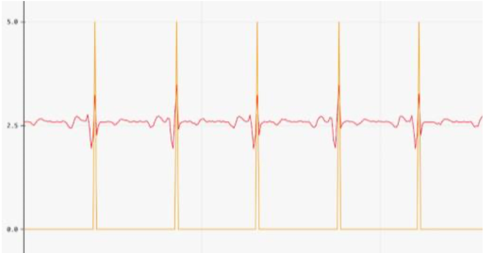
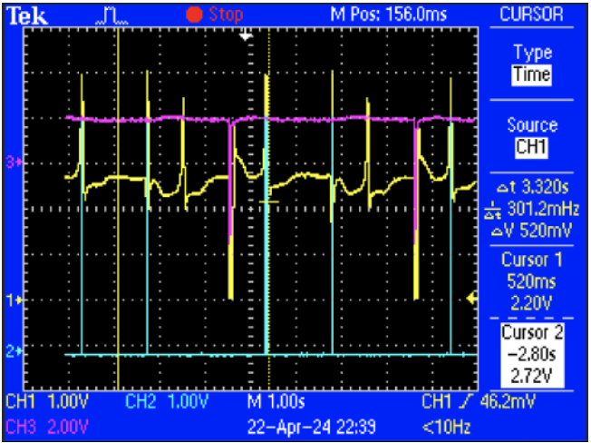

VVI Pacemaker
April 2024
Arduino • C/C++ • ECG • Analog Circuits • Signal Processing • Embedded Systems
Overview
I built a VVI pacemaker that could sense ventricular cardiac activity, measure heart rate in real time, and deliver an electrical pacing pulse when the heart's intrinsic rhythm became too slow.
The system combined analog circuit design with embedded software. A custom sensing circuit acquired and conditioned the ECG, an Arduino processed detected R-waves and implemented the pacing algorithm, and a transistor-based output stage delivered controlled stimulation to cardiac tissue.
Because the device operated in VVI mode, ventricular activity was both sensed and paced, while pacing was inhibited whenever a natural ventricular beat occurred. This allowed the heart to maintain its own rhythm whenever possible and only introduced synthetic stimulation when the time since the previous beat exceeded the programmed lower rate interval.
Building the System
I divided the pacemaker into three primary stages: sensing, processing, and stimulation. Together, these stages created a closed-loop system that continuously observed the ECG, decided whether intervention was necessary, and generated a pacing pulse when required.
1. ECG Sensing and Signal Conditioning
Cardiac electrical signals are small and susceptible to noise, so the first challenge was converting the raw ECG into a signal that could be reliably interpreted by a microcontroller.
The sensing circuit began with an AD623 instrumentation amplifier performing differential ECG acquisition. The signal then passed through RC high-pass and low-pass filtering to suppress baseline drift and high-frequency noise before being amplified to a voltage range suitable for the Arduino.
A comparator converted each detected R-wave into a digital-like pulse. This gave the microcontroller a clean indication of when a ventricular contraction occurred without requiring the pacing algorithm to identify every ECG feature directly in software.

2. Embedded Heartbeat Detection
The conditioned ECG and comparator output were sampled by an Arduino Nano. I configured the system for a sampling rate of approximately 200 samples per second and used the elapsed time between consecutive R-waves to calculate heart rate.
Each detected R-wave established the beginning of a new R-R interval. The firmware measured this interval and converted it into beats per minute, providing a continuously updated estimate of the heart's intrinsic rate.

3. VVI Pacing Algorithm
The central control parameter was the lower rate interval (LRI), which defines the maximum amount of time the pacemaker allows between ventricular beats.
For example, a minimum heart rate of 60 BPM corresponds to an LRI of one second. Every natural R-wave resets this timer. If another R-wave is detected before the interval expires, the pacemaker does nothing. If the timer reaches the LRI without detecting a natural beat, the Arduino generates a pacing command.
This inhibition behavior is important because the pacemaker should not stimulate continuously. Instead, it supplements the intrinsic rhythm only when the heart fails to produce a beat quickly enough.

4. Cardiac Stimulation Circuit
The Arduino itself was used as a controller rather than as the direct stimulation source. Its digital pacing output controlled an NPN transistor that acted as a switch for a capacitor-based stimulation circuit.
When pacing was required, the circuit generated a sharp, repeatable electrical pulse across the cardiac load. Based on measurements made during the experiment, stimulation was delivered at approximately twice the rheobase current and for twice the measured chronaxie duration.
The resulting pacing pulse was approximately 0.5 mA for 40 ms, which was sufficient to initiate contraction of the frog myocardium during testing.

Persistent Cardiac Event Storage
I also implemented a diagnostic memory system using the Arduino's EEPROM. The goal was to preserve useful information even after the pacemaker lost power.
The software recorded events including natural heartbeats, synthetic paced beats, arrhythmia events, event timing, and a rolling segment of recent ECG measurements. Because EEPROM capacity was limited, ECG samples were stored using a circular buffer so that newer measurements replaced the oldest data.
Event type and timing information were encoded into designated memory locations, allowing the device to reconstruct portions of its activity after an experiment. During testing, stored data could still be retrieved nine days after the original cardiac experiment.

Results
Testing began by characterizing the complete ECG acquisition circuit. The theoretical signal gain was approximately -1160, while the experimentally measured gain was approximately -1130, corresponding to a 2.6% difference.
The comparator reliably triggered on detected R-waves, allowing the Arduino to estimate the R-R interval and calculate heart rate. From 60 to 150 BPM, the measured average heart rate remained within 0.31% of the expected value.
| Expected HR | Measured HR | Error |
|---|---|---|
| 60 BPM | 59.8 BPM | 0.31% |
| 120 BPM | 119.8 BPM | 0.18% |
| 150 BPM | 149.6 BPM | 0.24% |
| 180 BPM | 161.6 BPM | 10.2% |
| 240 BPM | 173.3 BPM | 27.7% |
At higher input rates, accuracy decreased because the 200 samples-per-second acquisition rate limited the temporal resolution of R-wave detection. Increasing the sampling rate would be a straightforward way to improve performance at these frequencies.
Closed-Loop Pacing
The most important test was whether the entire system could operate as a pacemaker rather than simply as an ECG monitor. During cardiac experiments, the system detected the frog's intrinsic ventricular activity and delivered stimulation when the lower rate interval was exceeded.
The resulting electrogram contained both natural and synthetic heartbeats. After a paced contraction, the system could detect the return of natural cardiac activity and inhibit the next scheduled stimulus. This demonstrated the core behavior of a VVI pacemaker: sense, wait, pace when necessary, and inhibit pacing when intrinsic activity returns.

Takeaways
This project brought together several layers of biomedical engineering in a single system. I designed analog electronics for acquiring a physiological signal, implemented digital signal processing and timing logic on a microcontroller, designed an electrical stimulation stage, and built firmware for both real-time control and persistent data logging.
More importantly, the final device behaved as a closed-loop system rather than a collection of individual components. It could observe cardiac activity, interpret that activity, determine whether intervention was necessary, stimulate the heart, and then respond to the resulting physiological signal.
Future improvements would include increasing the ECG sampling rate, expanding the available memory for longer ECG recordings, and adding a sensing blanking period during stimulation to prevent pacing artifacts from interfering with heartbeat detection.